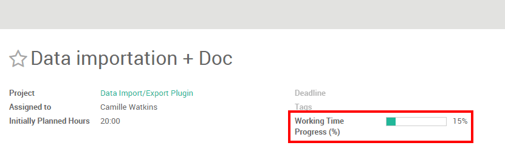

Following and planning your employees' assignments can be a heavy challenge especially when you manage several people. Luckily, using Odoo Project, you can handle it in only a couple of clicks.
Configuration
The only necessary configuration is to install the Project Management module. To do so, go in the application module, search for project and install the application.

If you wish to manage time estimation, you will need to enable timesheets on tasks. From the Project application, go to in the dropdown menu. Then, under Time Work Estimation, select the manage time estimation on tasks option. Do not forget to apply your changes.
This feature will create a progress bar in the form view of your tasks. Every time your salesperson will add working time in his timesheet, the bar will be updated accordingly, based on the initially planned hours.
Manage tasks with views
You can have an overview of your different task thanks to the multiple views available with Odoo. Three main views will help you to plan and follow up on your employees' tasks: the kanban view, the list view (using timesheets) and the calendar view.
Create and edit tasks in order to fill up your pipeline. Don't forget to fill in a responsible person and an estimated time if you have one.
Get an overview of activities with the kanban view
The Kanban view is a post-it like view, divided in different stages. It enables you to have a clear view on the stages your tasks are in and the ones having the higher priorities.
The Kanban view is the default view when accessing a project, but if you are on another view, you can go back to it any time by clicking the kanban view logo in the upper right corner

Add/rearrange stages
You can easily personalize your project to suit your business needs by creating new columns. From the Kanban view of your project, you can add stages by clicking on Add new column (see image below). If you want to rearrange the order of your stages, you can easily do so by dragging and dropping the column you want to move to the desired location. You can also fold or unfold your stages by using the setting icon on your desired stage.

Tip
Create one column per stage in your working process. For example, in a development project, stages might be: Specifications, Development, Test, Done.
Sort tasks by priority
On each one of your columns, you have the ability to sort your tasks by priority. Tasks with a higher priority will automatically be moved to the top of the column. From the Kanban view, click on the star in the bottom left of a task to tag it as high priority. For the tasks that are not tagged, Odoo will automatically classify them according to their deadlines.
Note that dates that passed their deadlines will appear in red( in the list view too) so you can easily follow up the progression of different tasks.

Tip
Don't forget you can filter your tasks with the filter menu.
Track the progress of each task with the list view
If you enabled the Manage Time Estimation on Tasks, your employees will be able to log their activities on tasks under the Timesheets sub-menu along with their duration. The Working Time Progress bar will be updated each time the employee will add an activity.

As a manager, you can easily overview the time spent on tasks for all employees by using the list view. To do so, access the project of your choice and click on the List view icon (see below). The last column will show you the progression of each task.

Keep an eye on deadlines with the Calendar view
If you add a deadline in your task, they will appear in the calendar view. As a manager, this view enables you to keep an eye on all deadlines in a single window.

All the tasks are tagged with a color corresponding to the employee assigned to them. You can easily filter the deadlines by employees by ticking the related boxes on the right of the calendar view.
Tip
You can easily change the deadline from the Calendar view by dragging and dropping the task to another case.